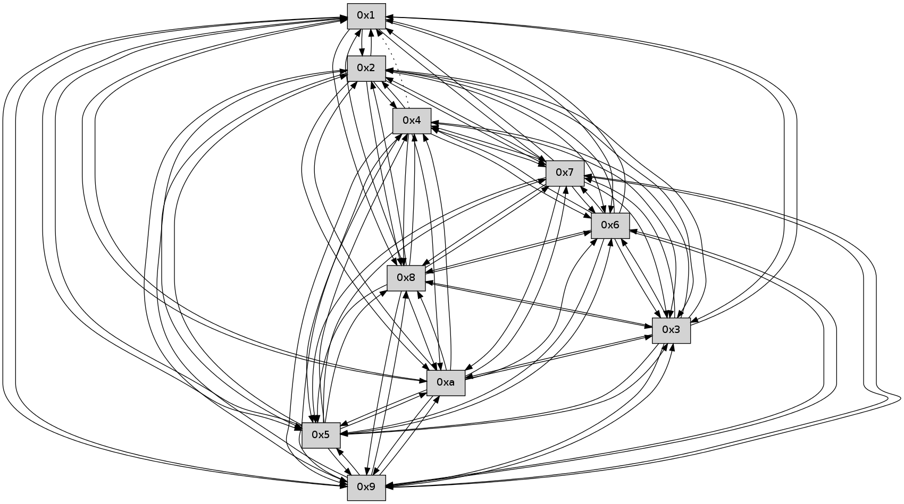

>> << IDX [start] -100 -25 -5 +0 +5 +25 +100 [355.087372065]
 Previous packets
----------------------------------------------------------------------
350.358581 beacon01(faad) #0 coord=01,02,03,04,05,06,07,0a,09,08 cycle=688.0ms assoc
-- color-indic=0 64 b7 15
350.368565 beacon02(faad) #0 coord=01,02,03,04,05,06,07,0a,09,08 cycle=688.0ms assoc 64 24 24
350.378564 beacon03(faad) #0 coord=01,02,03,04,05,06,07,0a,09,08 cycle=688.0ms assoc 64 5e 69
350.388564 beacon04(faad) #0 coord=01,02,03,04,05,06,07,0a,09,08 cycle=688.0ms assoc 64 29 83
350.398563 beacon05(faad) #0 coord=01,02,03,04,05,06,07,0a,09,08 cycle=688.0ms assoc 64 53 ce
350.408564 beacon06(faad) #0 coord=01,02,03,04,05,06,07,0a,09,08 cycle=688.0ms assoc 64 dd 19
350.418565 beacon07(faad) #0 coord=01,02,03,04,05,06,07,0a,09,08 cycle=688.0ms assoc 64 a7 54
350.428568 beacon0a(faad) #0 coord=01,02,03,04,05,06,07,0a,09,08 cycle=688.0ms assoc 64 d6 5f
350.438570 beacon09(faad) #0 coord=01,02,03,04,05,06,07,0a,09,08 cycle=688.0ms assoc 64 58 88
350.448571 beacon08(faad) #0 coord=01,02,03,04,05,06,07,0a,09,08 cycle=688.0ms assoc 64 22 c5
350.459758 [Hello(4): seq=228 sym=5,7,6,2,3,9,8,10 asym=1 sysInfo= stat=5:10,0,0,0/7:0,0,0,0/6:3,0,0,0/2:0,0,0,0/3:3,0,0,0/9:12,0,0,0/8:3,0,0,0/10:4,0,0,0/1:8,0,0,0]
350.463050 [Hello(2): seq=225 sym=4,5,7,6,3,9,8,10,1 sysInfo= stat=4:5,0,0,0/5:5,0,0,0/7:9,0,0,0/6:1,0,0,0/3:8,0,0,0/9:5,0,0,0/8:1,0,0,0/10:15,0,0,0/1:5,0,0,0]
350.466409 [Hello(3): seq=228 sym=1,7,6,2,4,8,9,10 sysInfo= stat=1:7,0,0,0/7:11,0,0,0/6:6,0,0,0/2:13,0,0,0/4:3,0,0,0/8:10,0,0,0/9:2,0,0,0/10:12,0,0,0]
350.469725 [Hello(5): seq=228 sym=7,6,4,3,1,9,8,10,2 sysInfo= stat=7:14,0,0,0/6:2,0,0,0/4:7,0,0,0/3:2,0,0,0/1:6,0,0,0/9:11,0,0,0/8:15,0,0,0/10:0,0,0,0/2:0,0,0,0]
----------------------------------------------------------------------
351.146714 beacon01(faad) #0 coord=01,02,03,04,05,06,07,0a,09,08 cycle=688.0ms assoc
-- color-indic=0 64 0b 10
351.156697 beacon02(faad) #0 coord=01,02,03,04,05,06,07,0a,09,08 cycle=688.0ms assoc 64 98 21
351.166697 beacon03(faad) #0 coord=01,02,03,04,05,06,07,0a,09,08 cycle=688.0ms assoc 64 e2 6c
351.176697 beacon04(faad) #0 coord=01,02,03,04,05,06,07,0a,09,08 cycle=688.0ms assoc 64 95 86
351.186698 beacon05(faad) #0 coord=01,02,03,04,05,06,07,0a,09,08 cycle=688.0ms assoc 64 ef cb
351.196697 beacon06(faad) #0 coord=01,02,03,04,05,06,07,0a,09,08 cycle=688.0ms assoc 64 61 1c
351.206699 beacon07(faad) #0 coord=01,02,03,04,05,06,07,0a,09,08 cycle=688.0ms assoc 64 1b 51
351.216702 beacon0a(faad) #0 coord=01,02,03,04,05,06,07,0a,09,08 cycle=688.0ms assoc 64 6a 5a
351.226703 beacon09(faad) #0 coord=01,02,03,04,05,06,07,0a,09,08 cycle=688.0ms assoc 64 e4 8d
351.236703 beacon08(faad) #0 coord=01,02,03,04,05,06,07,0a,09,08 cycle=688.0ms assoc 64 9e c0
351.247855 [Hello(10): seq=160 sym=6,3,2,5,9,8,7,4,1 sysInfo= stat=6:10,0,0,0/3:6,0,0,0/2:13,0,0,0/5:11,0,0,0/9:9,0,0,0/8:14,0,0,0/7:15,0,0,0/4:7,0,0,0/1:5,0,0,0]
351.250542 [Hello(9): seq=171 sym=5,2,3,4,7,6,8,1 sysInfo= stat=5:9,0,0,0/2:7,0,0,0/3:6,0,0,0/4:0,0,0,0/7:8,0,0,0/6:15,0,0,0/8:2,0,0,0/1:11,0,0,0]
351.253101 [Hello(6): seq=228 sym=2,3,5,4,7,9,8,1 sysInfo= stat=2:5,0,0,0/3:2,0,0,0/5:5,0,0,0/4:13,0,0,0/7:1,0,0,0/9:6,0,0,0/8:5,0,0,0/1:7,0,0,0]
351.256455 [Hello(8): seq=171 sym=5,2,3,4,7,6,9,10,1 sysInfo= stat=5:0,0,0,0/2:3,0,0,0/3:1,0,0,0/4:6,0,0,0/7:9,0,0,0/6:13,0,0,0/9:13,0,0,0/10:10,0,0,0/1:11,0,0,0]
351.261885 [Hello(7): seq=228 sym=2,3,5,6,4,8,9,10,1 sysInfo= stat=2:2,0,0,0/3:0,0,0,0/5:8,0,0,0/6:11,0,0,0/4:5,0,0,0/8:0,0,0,0/9:2,0,0,0/10:13,0,0,0/1:9,0,0,0]
----------------------------------------------------------------------
351.934844 beacon01(faad) #0 coord=01,02,03,04,05,06,07,0a,09,08 cycle=688.0ms assoc
-- color-indic=0 64 1f 7e
351.944827 beacon02(faad) #0 coord=01,02,03,04,05,06,07,0a,09,08 cycle=688.0ms assoc 64 8c 4f
351.954827 beacon03(faad) #0 coord=01,02,03,04,05,06,07,0a,09,08 cycle=688.0ms assoc 64 f6 02
351.964828 beacon04(faad) #0 coord=01,02,03,04,05,06,07,0a,09,08 cycle=688.0ms assoc 64 81 e8
351.974827 beacon05(faad) #0 coord=01,02,03,04,05,06,07,0a,09,08 cycle=688.0ms assoc 64 fb a5
351.984828 beacon06(faad) #0 coord=01,02,03,04,05,06,07,0a,09,08 cycle=688.0ms assoc 64 75 72
351.994829 beacon07(faad) #0 coord=01,02,03,04,05,06,07,0a,09,08 cycle=688.0ms assoc 64 0f 3f
352.004832 beacon0a(faad) #0 coord=01,02,03,04,05,06,07,0a,09,08 cycle=688.0ms assoc 64 7e 34
352.014832 beacon09(faad) #0 coord=01,02,03,04,05,06,07,0a,09,08 cycle=688.0ms assoc 64 f0 e3
352.024832 beacon08(faad) #0 coord=01,02,03,04,05,06,07,0a,09,08 cycle=688.0ms assoc 64 8a ae
352.035976 [Hello(1): seq=137 sym=2,9,5,10,3,8,6,7 sysInfo= stat=2:15,0,0,0/9:1,0,0,0/5:1,0,0,0/10:5,0,0,0/3:12,0,0,0/8:15,0,0,0/6:6,0,0,0/7:12,0,0,0]
352.038256 [Hello(4): seq=229 sym=5,7,6,2,3,9,8,10 asym=1 sysInfo= stat=5:11,0,0,0/7:1,0,0,0/6:4,0,0,0/2:1,0,0,0/3:4,0,0,0/9:13,0,0,0/8:4,0,0,0/10:5,0,0,0/1:8,0,0,0]
352.041246 [Hello(2): seq=226 sym=4,5,7,6,3,9,8,10,1 sysInfo= stat=4:5,0,0,0/5:6,0,0,0/7:10,0,0,0/6:2,0,0,0/3:9,0,0,0/9:6,0,0,0/8:2,0,0,0/10:0,0,0,0/1:5,0,0,0]
352.044902 [Hello(5): seq=229 sym=7,6,4,3,1,9,8,10,2 sysInfo= stat=7:15,0,0,0/6:3,0,0,0/4:7,0,0,0/3:2,0,0,0/1:6,0,0,0/9:12,0,0,0/8:0,0,0,0/10:1,0,0,0/2:0,0,0,0]
352.050345 [Hello(3): seq=229 sym=1,7,6,2,4,8,9,10,5 sysInfo= stat=1:7,0,0,0/7:12,0,0,0/6:7,0,0,0/2:13,0,0,0/4:3,0,0,0/8:11,0,0,0/9:3,0,0,0/10:13,0,0,0/5:0,0,0,0]
----------------------------------------------------------------------
352.722976 beacon01(faad) #0 coord=01,02,03,04,05,06,07,0a,09,08 cycle=688.0ms assoc
-- color-indic=0 64 a3 7b
352.732958 beacon02(faad) #0 coord=01,02,03,04,05,06,07,0a,09,08 cycle=688.0ms assoc 64 30 4a
352.742959 beacon03(faad) #0 coord=01,02,03,04,05,06,07,0a,09,08 cycle=688.0ms assoc 64 4a 07
352.752959 beacon04(faad) #0 coord=01,02,03,04,05,06,07,0a,09,08 cycle=688.0ms assoc 64 3d ed
352.762959 beacon05(faad) #0 coord=01,02,03,04,05,06,07,0a,09,08 cycle=688.0ms assoc 64 47 a0
352.772959 beacon06(faad) #0 coord=01,02,03,04,05,06,07,0a,09,08 cycle=688.0ms assoc 64 c9 77
352.782959 beacon07(faad) #0 coord=01,02,03,04,05,06,07,0a,09,08 cycle=688.0ms assoc 64 b3 3a
352.792965 beacon0a(faad) #0 coord=01,02,03,04,05,06,07,0a,09,08 cycle=688.0ms assoc 64 c2 31
352.802962 beacon09(faad) #0 coord=01,02,03,04,05,06,07,0a,09,08 cycle=688.0ms assoc 64 4c e6
352.812964 beacon08(faad) #0 coord=01,02,03,04,05,06,07,0a,09,08 cycle=688.0ms assoc 64 36 ab
352.824120 [Hello(8): seq=172 sym=5,2,3,4,7,6,9,10,1 sysInfo= stat=5:1,0,0,0/2:4,0,0,0/3:2,0,0,0/4:6,0,0,0/7:10,0,0,0/6:13,0,0,0/9:13,0,0,0/10:10,0,0,0/1:12,0,0,0]
352.827116 [Hello(9): seq=172 sym=5,2,3,4,7,6,8,1 sysInfo= stat=5:10,0,0,0/2:8,0,0,0/3:7,0,0,0/4:0,0,0,0/7:9,0,0,0/6:0,0,0,0/8:3,0,0,0/1:12,0,0,0]
352.830147 [Hello(10): seq=161 sym=6,3,2,5,9,8,7,4,1 sysInfo= stat=6:11,0,0,0/3:7,0,0,0/2:14,0,0,0/5:12,0,0,0/9:10,0,0,0/8:15,0,0,0/7:0,0,0,0/4:7,0,0,0/1:6,0,0,0]
352.834296 [Hello(6): seq=229 sym=2,3,5,4,7,9,8,1 sysInfo= stat=2:6,0,0,0/3:3,0,0,0/5:6,0,0,0/4:13,0,0,0/7:2,0,0,0/9:6,0,0,0/8:6,0,0,0/1:8,0,0,0]
352.839231 [Hello(7): seq=229 sym=2,3,5,6,4,8,9,10,1 sysInfo= stat=2:3,0,0,0/3:1,0,0,0/5:9,0,0,0/6:11,0,0,0/4:5,0,0,0/8:0,0,0,0/9:2,0,0,0/10:13,0,0,0/1:10,0,0,0]
----------------------------------------------------------------------
353.511107 beacon01(faad) #0 coord=01,02,03,04,05,06,07,0a,09,08 cycle=688.0ms assoc
-- color-indic=0 64 67 75
353.521090 beacon02(faad) #0 coord=01,02,03,04,05,06,07,0a,09,08 cycle=688.0ms assoc 64 f4 44
353.531089 beacon03(faad) #0 coord=01,02,03,04,05,06,07,0a,09,08 cycle=688.0ms assoc 64 8e 09
353.541089 beacon04(faad) #0 coord=01,02,03,04,05,06,07,0a,09,08 cycle=688.0ms assoc 64 f9 e3
353.551091 beacon05(faad) #0 coord=01,02,03,04,05,06,07,0a,09,08 cycle=688.0ms assoc 64 83 ae
353.561091 beacon06(faad) #0 coord=01,02,03,04,05,06,07,0a,09,08 cycle=688.0ms assoc 64 0d 79
353.571091 beacon07(faad) #0 coord=01,02,03,04,05,06,07,0a,09,08 cycle=688.0ms assoc 64 77 34
353.581095 beacon0a(faad) #0 coord=01,02,03,04,05,06,07,0a,09,08 cycle=688.0ms assoc 64 06 3f
353.591095 beacon09(faad) #0 coord=01,02,03,04,05,06,07,0a,09,08 cycle=688.0ms assoc 64 88 e8
353.601096 beacon08(faad) #0 coord=01,02,03,04,05,06,07,0a,09,08 cycle=688.0ms assoc 64 f2 a5
353.612877 [Hello(5): seq=230 sym=7,6,4,3,1,9,8,10,2 sysInfo= stat=7:0,0,0,0/6:4,0,0,0/4:7,0,0,0/3:3,0,0,0/1:6,0,0,0/9:13,0,0,0/8:1,0,0,0/10:2,0,0,0/2:0,0,0,0]
353.615285 [Hello(1): seq=138 sym=2,9,5,10,3,8,6,7 sysInfo= stat=2:0,0,0,0/9:2,0,0,0/5:2,0,0,0/10:6,0,0,0/3:13,0,0,0/8:0,0,0,0/6:7,0,0,0/7:13,0,0,0]
353.618480 [Hello(4): seq=230 sym=5,7,6,2,3,9,8,10 asym=1 sysInfo= stat=5:12,0,0,0/7:2,0,0,0/6:5,0,0,0/2:2,0,0,0/3:5,0,0,0/9:14,0,0,0/8:5,0,0,0/10:6,0,0,0/1:8,0,0,0]
353.621772 [Hello(3): seq=230 sym=1,7,6,2,4,8,9,10,5 sysInfo= stat=1:7,0,0,0/7:13,0,0,0/6:8,0,0,0/2:13,0,0,0/4:3,0,0,0/8:12,0,0,0/9:4,0,0,0/10:14,0,0,0/5:0,0,0,0]
353.631864 [Hello(2): seq=227 sym=4,5,7,6,3,9,8,10,1 sysInfo= stat=4:5,0,0,0/5:7,0,0,0/7:11,0,0,0/6:3,0,0,0/3:10,0,0,0/9:7,0,0,0/8:3,0,0,0/10:1,0,0,0/1:5,0,0,0]
----------------------------------------------------------------------
354.299239 beacon01(faad) #0 coord=01,02,03,04,05,06,07,0a,09,08 cycle=688.0ms assoc
-- color-indic=0 64 db 70
354.309221 beacon02(faad) #0 coord=01,02,03,04,05,06,07,0a,09,08 cycle=688.0ms assoc 64 48 41
354.319220 beacon03(faad) #0 coord=01,02,03,04,05,06,07,0a,09,08 cycle=688.0ms assoc 64 32 0c
354.329222 beacon04(faad) #0 coord=01,02,03,04,05,06,07,0a,09,08 cycle=688.0ms assoc 64 45 e6
354.339221 beacon05(faad) #0 coord=01,02,03,04,05,06,07,0a,09,08 cycle=688.0ms assoc 64 3f ab
354.349221 beacon06(faad) #0 coord=01,02,03,04,05,06,07,0a,09,08 cycle=688.0ms assoc 64 b1 7c
354.359225 beacon07(faad) #0 coord=01,02,03,04,05,06,07,0a,09,08 cycle=688.0ms assoc 64 cb 31
354.369227 beacon0a(faad) #0 coord=01,02,03,04,05,06,07,0a,09,08 cycle=688.0ms assoc 64 ba 3a
354.379227 beacon09(faad) #0 coord=01,02,03,04,05,06,07,0a,09,08 cycle=688.0ms assoc 64 34 ed
354.389227 beacon08(faad) #0 coord=01,02,03,04,05,06,07,0a,09,08 cycle=688.0ms assoc 64 4e a0
354.403405 [Hello(9): seq=173 sym=5,2,3,4,7,6,8,10,1 sysInfo= stat=5:11,0,0,0/2:9,0,0,0/3:8,0,0,0/4:1,0,0,0/7:10,0,0,0/6:1,0,0,0/8:3,0,0,0/10:0,0,0,0/1:12,0,0,0]
354.407376 [Hello(7): seq=230 sym=2,3,5,6,4,8,9,10,1 sysInfo= stat=2:4,0,0,0/3:2,0,0,0/5:10,0,0,0/6:11,0,0,0/4:6,0,0,0/8:0,0,0,0/9:2,0,0,0/10:13,0,0,0/1:10,0,0,0]
354.411859 [Hello(10): seq=162 sym=6,3,2,5,9,8,7,4,1 sysInfo= stat=6:12,0,0,0/3:8,0,0,0/2:15,0,0,0/5:13,0,0,0/9:10,0,0,0/8:15,0,0,0/7:1,0,0,0/4:8,0,0,0/1:6,0,0,0]